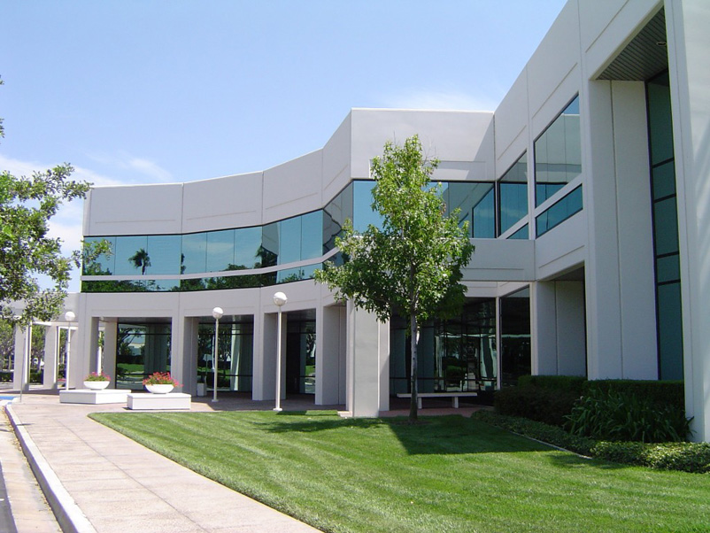
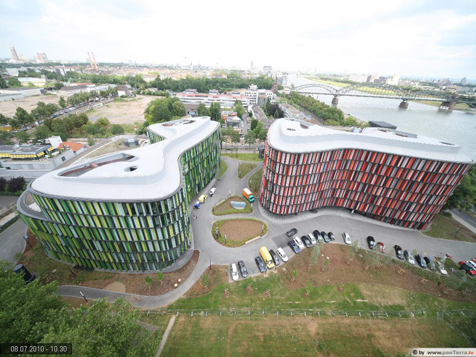

- PORTFOLIO
- Our portfolio expresses a common interest in
connections — people to place, place to planet. See our design philosophy at work in the latest projects. - All
- By Categories:
- Office
- Commercial Building
- Public Space
- Interior Design
COMPANY NAME

Patient-centered and sustainability driven, the design welcomes visitors into a two-story, glass-walled entry connecting outpatient services along the building's central spine. As a result, the interior layout feels less like a hospital and more like medical offices. The simple plan with amenities on one level makes the facility easy to navigate for patients.

Surgery, inpatient units and remaining clinical functions are layered behind these public spaces. Daylighting strategies throughout the facility, locally extracted and produced materials, high-efficiency building systems and 100% outside air with heat recovery contribute to environmental performance.